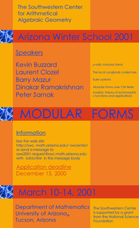

<!-- *** This file was autogenerated by the SCAG Python HTML Templating System *** -->
<!-- *** DO NOT EDIT THIS FILE!!!  Instead edit the corresponding .html.in file! *** -->
<table>
  <tr>
    <td>
      
      <H1>Arizona Winter School 2001
	<BR>
	General Information</H1>
      <H2>General Information</H2> 
      <UL COMPACT>
	<LI>
	  Title: &#147;Modular Forms&#148;
	</LI>
	<LI>
	  Dates: March 10-14, 2001
	</LI>
	<LI>
	  Location: The University of Arizona
	</LI>
	<LI>
	  Organizers: Douglas Ulmer, Wayne Raskind, and William McCallum 
	</LI>
      </UL>
      <H2>Speakers and Courses</H2> (The links below lead to the corresponding sections of the notes page.) 
      <UL COMPACT>
	<LI>
	  Kevin Buzzard: &#147;<A href="../../aws/2001/notes.html#Buzzard">p-adic modular forms</A>&#148;
	</LI>
	<LI>
	  Laurent Clozel: &#147;<A href="../../aws/2001/notes.html#Clozel">The local Langlands conjecture</A>&#148;
	</LI>
	<LI>
	  Barry Mazur, assisted by Tom Weston: &#147;<A href="../../aws/2001/notes.html#Mazur">Euler systems</A>&#148;
	</LI>
	<LI>
	  Dinakar Ramakrishnan: &#147;<A href="../../aws/2001/notes.html#Ramakrishnan">Modular forms over CM fields</A>&#148;
	</LI>
	<LI>
	  Peter Sarnak: &#147;<A href="../../aws/2001/notes.html#Sarnak">Analytic theory of automorphic L-functions and applications</A>&#148;
	</LI>
      </UL>
      <H2>Professional Development Component</H2> 
      <UL COMPACT>
	<LI>
	  The focus of the professional development component was on <A href="../../aws/2001/notes.html#Levy">writing mathematics</A>. Silvio Levi of MSRI lectured and lead working groups.
	</LI>
      </UL>

    </td>
    <td style="vertical-align: top;">
      <a href="../../aws/2001/2001Poster.jpg">
        
      </a>
    </td>
  </tr>
</table>
